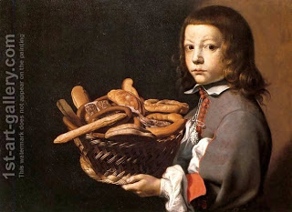

Menachot 96 - Wafers of the High Priest
Each day, the High Priest brought twelve wafers, six in the morning and six in the afternoon. In the morning he would bring and consecrate a full tenth (issaron, or 5-pound measure) of flour and divide it into two halves. Kneading and baking of the wafers was done daily, even on Shabbat, but grinding and sifting of their flour was done before. Rabbi Akiva formulated a rule: "Even when the Torah allowed a labor on Shabbat, it allowed only that portion of it that could not be done before Shabbat."
The two loaves on Shavuot were seven hand-breadths long and four hand-breadths wide. They had strips of dough at the corners, or "horns," that were four finger-breadths long. The breads of visions were larger: ten hand-breadths long, five hand-breadths wide, and their "horns" were seven finger-breadths in length.
Ben Zoma explained that the "Bread of Vision" can also be translated as the "Bread of Faces," meaning that it should have many "faces," or surfaces, thus the complicated shape.
Art: Evaristo Baschenis - Boy With A Basket Of Bread